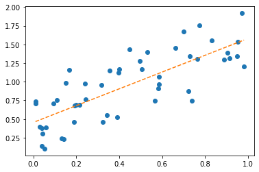
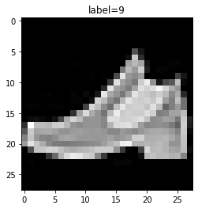
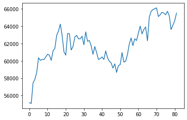
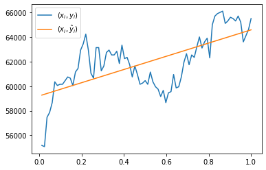
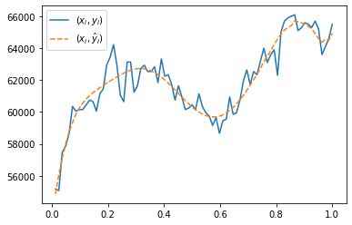
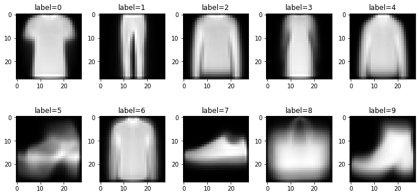

import pandas as pd
import numpy as np
import matplotlib.pyplot as plt
import yfinance as yf
import PIL
import io
import requests10wk-1: 중간고사

제출은 *.ipynb, *.html, *.pdf 파일로 제출할 것
ipynb파일형태제출을 권장함.
Imports
1. Numpy and Pandas (35점)
FIFA23
(1)--(3) 아래는 FIFA23 자료를 불러오는 코드이다.
df=pd.read_csv('https://raw.githubusercontent.com/guebin/DV2022/master/posts/FIFA23_official_data.csv').drop(columns=['Loaned From', 'Best Overall Rating']).dropna().reset_index(drop=True)
df.head()| ID | Name | Age | Photo | Nationality | Flag | Overall | Potential | Club | Club Logo | ... | Work Rate | Body Type | Real Face | Position | Joined | Contract Valid Until | Height | Weight | Release Clause | Kit Number | |
|---|---|---|---|---|---|---|---|---|---|---|---|---|---|---|---|---|---|---|---|---|---|
| 0 | 209658 | L. Goretzka | 27 | https://cdn.sofifa.net/players/209/658/23_60.png | Germany | https://cdn.sofifa.net/flags/de.png | 87 | 88 | FC Bayern München | https://cdn.sofifa.net/teams/21/30.png | ... | High/ Medium | Unique | Yes | <span class="pos pos28">SUB | Jul 1, 2018 | 2026 | 189cm | 82kg | €157M | 8.0 |
| 1 | 212198 | Bruno Fernandes | 27 | https://cdn.sofifa.net/players/212/198/23_60.png | Portugal | https://cdn.sofifa.net/flags/pt.png | 86 | 87 | Manchester United | https://cdn.sofifa.net/teams/11/30.png | ... | High/ High | Unique | Yes | <span class="pos pos15">LCM | Jan 30, 2020 | 2026 | 179cm | 69kg | €155M | 8.0 |
| 2 | 224334 | M. Acuña | 30 | https://cdn.sofifa.net/players/224/334/23_60.png | Argentina | https://cdn.sofifa.net/flags/ar.png | 85 | 85 | Sevilla FC | https://cdn.sofifa.net/teams/481/30.png | ... | High/ High | Stocky (170-185) | No | <span class="pos pos7">LB | Sep 14, 2020 | 2024 | 172cm | 69kg | €97.7M | 19.0 |
| 3 | 192985 | K. De Bruyne | 31 | https://cdn.sofifa.net/players/192/985/23_60.png | Belgium | https://cdn.sofifa.net/flags/be.png | 91 | 91 | Manchester City | https://cdn.sofifa.net/teams/10/30.png | ... | High/ High | Unique | Yes | <span class="pos pos13">RCM | Aug 30, 2015 | 2025 | 181cm | 70kg | €198.9M | 17.0 |
| 4 | 224232 | N. Barella | 25 | https://cdn.sofifa.net/players/224/232/23_60.png | Italy | https://cdn.sofifa.net/flags/it.png | 86 | 89 | Inter | https://cdn.sofifa.net/teams/44/30.png | ... | High/ High | Normal (170-) | Yes | <span class="pos pos13">RCM | Sep 1, 2020 | 2026 | 172cm | 68kg | €154.4M | 23.0 |
5 rows × 27 columns
(1) 공백이 포함된 column이름이 총 몇개인지 count하는 코드를 작성하라.
hint 모두 11개의 column name에 공백이 포함되어있음
(풀이)
sum([' ' in name for name in df.columns])11(2) column name에 공백이 포함된 열을 출력하라.
(풀이)
df.loc[:,[' ' in name for name in df.columns]]| Club Logo | Preferred Foot | International Reputation | Weak Foot | Skill Moves | Work Rate | Body Type | Real Face | Contract Valid Until | Release Clause | Kit Number | |
|---|---|---|---|---|---|---|---|---|---|---|---|
| 0 | https://cdn.sofifa.net/teams/21/30.png | Right | 4.0 | 4.0 | 3.0 | High/ Medium | Unique | Yes | 2026 | €157M | 8.0 |
| 1 | https://cdn.sofifa.net/teams/11/30.png | Right | 3.0 | 3.0 | 4.0 | High/ High | Unique | Yes | 2026 | €155M | 8.0 |
| 2 | https://cdn.sofifa.net/teams/481/30.png | Left | 2.0 | 3.0 | 3.0 | High/ High | Stocky (170-185) | No | 2024 | €97.7M | 19.0 |
| 3 | https://cdn.sofifa.net/teams/10/30.png | Right | 4.0 | 5.0 | 4.0 | High/ High | Unique | Yes | 2025 | €198.9M | 17.0 |
| 4 | https://cdn.sofifa.net/teams/44/30.png | Right | 3.0 | 3.0 | 3.0 | High/ High | Normal (170-) | Yes | 2026 | €154.4M | 23.0 |
| ... | ... | ... | ... | ... | ... | ... | ... | ... | ... | ... | ... |
| 16359 | https://cdn.sofifa.net/teams/114628/30.png | Right | 1.0 | 3.0 | 1.0 | Medium/ Medium | Normal (185+) | No | 2027 | €218K | 35.0 |
| 16360 | https://cdn.sofifa.net/teams/1478/30.png | Right | 1.0 | 2.0 | 1.0 | Medium/ Medium | Lean (185+) | No | 2026 | €188K | 21.0 |
| 16361 | https://cdn.sofifa.net/teams/113796/30.png | Right | 1.0 | 2.0 | 1.0 | Medium/ Medium | Lean (185+) | No | 2023 | €142K | 12.0 |
| 16362 | https://cdn.sofifa.net/teams/112260/30.png | Right | 1.0 | 2.0 | 1.0 | Medium/ Medium | Normal (185+) | No | 2021 | €214K | 40.0 |
| 16363 | https://cdn.sofifa.net/teams/702/30.png | Left | 1.0 | 2.0 | 1.0 | Medium/ Medium | Normal (185+) | No | 2021 | €131K | 30.0 |
16364 rows × 11 columns
(3) 데이터프레임을 올바르게 해석한 사람을 모두 고르시오 (모두 맞출경우만 정답으로 인정)
- 세민: 데이터프레임에는 모두 27개의 열이 있다.
- 성재: 한국선수(
Nationality==Korea Republic)와 일본선수(Nationality==Japan)의Overall의 평균값은 일본이 더 높다. - 민정: 총 159개의 나라선수들이 포함되어 있다.
- 슬기: 선수들의 연령이 25세이상(>=)인 선수들은 그렇지 않은 선수들보다 평균적으로 키(
Height)가크다.
(풀이)
세민: 데이터프레임에는 모두 27개의 열이 있다 -> True
len(df.columns) == 27True성재: 한국선수(Nationality==Korea Republic)와 일본선수(Nationality==Japan)의 Overall의 평균값은 일본이 더 높다. -> True
df.query('Nationality == "Korea Republic"').Overall.mean() < df.query('Nationality == "Japan"').Overall.mean()True민정: 총 159개의 나라선수들이 포함되어 있다. -> True
len(set(df.Nationality))==159True슬기: 선수들의 연령이 25세이상(>=)인 선수들은 그렇지 않은 선수들보다 평균적으로 키(Height)가크다. -> True
_old = np.mean([int(height[:3]) for height in df.query('Age>=25').Height.tolist()])
_young = np.mean([int(height[:3]) for height in df.query('Age<25').Height.tolist()])
_old > _youngTrue삼성전자의 주가
(4)--(5) 다음은 삼성전자의 주가를 크롤링하는 코드이다.
start_date = "2023-01-01"
end_date = "2023-05-02"
y = yf.download("005930.KS", start=start_date, end=end_date)['Adj Close'].to_numpy()[*********************100%***********************] 1 of 1 completed삼성전자의 주가 \({\boldsymbol y}\)를 시각화하면 아래와 같다.
plt.plot(y)
(4) 아래와 같은 변환을 이용하여 \({\boldsymbol y}\)를 \(\tilde {\boldsymbol y}\)로 변환하고 결과를 시각화하라.
- \(\tilde{y}_1= \frac{1}{4}(3y_1 + y_2)\)
- \(\tilde{y}_i= \frac{1}{4}(y_{i-1}+2y_i+y_{i+1})\), for \(i=2,3,\dots,n-1\)
- \(\tilde{y}_n= \frac{1}{4}(y_{n-1}+3y_{n})\)
hint: 아래의 코드를 관찰
np.eye(4) + np.array([abs(i-j)<2 for i in range(4) for j in range(4)]).reshape(4,4) array([[2., 1., 0., 0.],
[1., 2., 1., 0.],
[0., 1., 2., 1.],
[0., 0., 1., 2.]])(풀이)
T = len(y)
M = (np.eye(T) + np.array([abs(i-j)<2 for i in range(T) for j in range(T)]).reshape(T,T))/4
M[0,0] = 3/4; M[-1,-1]= 3/4
plt.plot(y,label=r'$y$')
plt.plot(M@y,'--',label=r'$M@y$')
plt.legend()<matplotlib.legend.Legend at 0x7f6efc12bb80>
(5) (4)의 변환을 50회 반복적용하고 결과를 시각화하라.
plt.plot(y,label=r'$y$')
plt.plot(np.linalg.matrix_power(M,50)@y,'--',label=r'$M^{50}@y$')
plt.legend()<matplotlib.legend.Legend at 0x7f6efc6694f0>
회귀모형
(6)--(7) \((x_i,y_i)\)가 아래와 같이 주어졌다고 가정하자.
x = np.array([0.00983, 0.01098, 0.02951, 0.0384 , 0.03973, 0.04178, 0.0533 ,
0.058 , 0.09454, 0.1103 , 0.1328 , 0.1412 , 0.1497 , 0.1664 ,
0.1906 , 0.1923 , 0.198 , 0.2141 , 0.2393 , 0.2433 , 0.3157 ,
0.3228 , 0.3418 , 0.3552 , 0.3918 , 0.3962 , 0.4 , 0.4482 ,
0.496 , 0.507 , 0.53 , 0.5654 , 0.582 , 0.5854 , 0.5854 ,
0.6606 , 0.7007 , 0.723 , 0.7305 , 0.7383 , 0.7656 , 0.7725 ,
0.831 , 0.8896 , 0.9053 , 0.914 , 0.949 , 0.952 , 0.9727 ,
0.982 ])
y = np.array([0.7381, 0.7043, 0.3937, 0.1365, 0.3784, 0.3028, 0.1037, 0.3846,
0.706 , 0.7572, 0.2421, 0.232 , 0.9855, 1.162 , 0.4653, 0.6791,
0.6905, 0.6865, 0.9757, 0.7665, 0.9522, 0.4641, 0.5498, 1.1509,
0.5288, 1.1195, 1.1659, 1.4341, 1.2779, 1.1648, 1.4002, 0.7472,
0.9142, 0.9658, 1.0707, 1.4501, 1.6758, 0.8778, 1.3384, 0.7476,
1.3086, 1.7537, 1.5559, 1.2928, 1.3832, 1.3115, 1.3382, 1.536 ,
1.9177, 1.2069])plt.plot(x,y,'o')
6. 아래의 수식을 이용하여 적절한 추세선 \(\hat{y}_i= \hat{\beta}_0 +\hat{\beta}_1 x_i\)를 구하고 시각화하라.
\[\begin{bmatrix} \hat{\beta}_0 \\ \hat{\beta}_1 \end{bmatrix} = ({\bf X}^T {\bf X})^{-1}{\bf X}^T {\boldsymbol y}, \quad {\bf X}=\begin{bmatrix} 1 & x_1 \\ 1 & x_2 \\ \dots \\ 1 & x_n \end{bmatrix}\]
(풀이)
n = len(x)
X = np.stack([np.ones(n),x],axis=1)
b,a = np.linalg.inv(X.T@X)@X.T@y
yhat = b+a*x
plt.plot(x,y,'o')
plt.plot(x,yhat,'--')
7. \(\frac{1}{n}\sum_{i=1}^{n}(y_i-\hat{y}_i)^2\)을 계산하라.
(풀이)
np.mean((y-yhat)**2)0.076028997633374162. fashion MNIST data (60점)
아래는 9가지의 의류이미지가 저장된 이미지데이터를 불러오는 코드이다.
df_train=pd.read_csv('https://media.githubusercontent.com/media/guebin/PP2023/main/posts/fashion-mnist_train.csv')
df_test=pd.read_csv('https://media.githubusercontent.com/media/guebin/PP2023/main/posts/fashion-mnist_test.csv')def rshp(row):
return row.reshape(28,28)xtrain = np.apply_along_axis(rshp,axis=1,arr=np.array(df_train.iloc[:,1:]))
xtest = np.apply_along_axis(rshp,axis=1,arr=np.array(df_test.iloc[:,1:]))
ytrain = np.array(df_train.label)
ytest = np.array(df_test.label)아래는 데이터에 대한 설명이다.
- 전체의 이미지의 수는 70000개이며, 60000개의 이미지 \({\tt xtrain}\)에 10000개의 이미지는 \({\tt xtest}\)에 저장되어 있다.
- 이미지에 대한 라벨은 각각 \({\tt ytrain}\)과 \(\tt ytest\)에 저장되어 있다. 따라서 \(\tt ytrain\)에는 60000개의 이미지에 해당하는 라벨이, \(\tt ytest\)에는 10000개의 이미지에 해당하는 라벨이 기록되어 있다.
- 보통 분석에서는 60000개의 이미지를 가지고 라벨을 맞추는 “훈련”을 하고 (\({\tt xtrain}\)을 이용하여 \({\tt ytrain}\)을 맞추는 방법을 학습하고), 그러한 훈련이 잘 되었는지 10000개의 이미지를 이용하여 “테스트”한다.
- 위와 같은 의미로 \(({\tt xtrain}, {\tt ytrain})\) 을 training data set, \(({\tt xtest},{\tt ytest})\) 를 test data set 이라고 부른다. (ref: 위키참고)
아래는 이미지자료와 시각화에 대한 설명이다.
- 각 이미지는 (28,28) 픽셀의 흑백이미지이다. 따라서 각 이미지는 (28,28,3) 이 아니라 (28,28) 의 shape을 가진 텐서로 구성되어있다.
- 흑백이미지를 시각화 하기 위해서는
plt.imshow(img, cmap='gray')를 이용한다. 여기에서 \({\tt img}\)은 임의의 2차원 텐서이며 이 예제의 경우 (28,28)의 shape을 가진다.
아래는 \({\tt xtrain}\)의 두번째 이미지, 즉 \({\tt xtrain[1,:,:]}\)를 확인하는 코드의 예시이다.
# plt.imshow(xtrain[1,:,:],cmap='gray')
plt.imshow(xtrain[1],cmap='gray') ## 같은코드임<matplotlib.image.AxesImage at 0x7f6efb174730>
이 이미지에 대한 label은 \({\tt ytrain[1]}\)의 값으로 확인가능하다.
ytrain[1]9이미지와 라벨을 한번에 표현하는 코드는 아래와 같이 작성가능하다.
plt.imshow(xtrain[1],cmap='gray')
plt.title('label={}'.format(ytrain[1]));
여기에서 9가 의미하는 것은 ’Ankel boot’이며, 다른 숫자가 의미하는 것은 각각 아래와 같다.
labels= {0:'T-shirt/top',
1:'Trouser',
2:'Pullover',
3:'Dress',
4:'Coat',
5:'Sandal',
6:'Shirt',
7:'Sneaker',
8:'Bag',
9:'Ankel boot'} 아래는 \({\tt xtrain}\)의 처음 10개의 이미지를 라벨과 함께 출력하는 코드이다.
fig, ax = plt.subplots(2,5,figsize=(10,5))
ax[0][0].imshow(xtrain[0],cmap='gray'); ax[0][0].set_title('label={}'.format(labels[ytest[0]]));
ax[0][1].imshow(xtrain[1],cmap='gray'); ax[0][1].set_title('label={}'.format(labels[ytest[1]]));
ax[0][2].imshow(xtrain[2],cmap='gray'); ax[0][2].set_title('label={}'.format(labels[ytest[2]]));
ax[0][3].imshow(xtrain[3],cmap='gray'); ax[0][3].set_title('label={}'.format(labels[ytest[3]]));
ax[0][4].imshow(xtrain[4],cmap='gray'); ax[0][4].set_title('label={}'.format(labels[ytest[4]]));
ax[1][0].imshow(xtrain[5],cmap='gray'); ax[1][0].set_title('label={}'.format(labels[ytest[5]]));
ax[1][1].imshow(xtrain[6],cmap='gray'); ax[1][1].set_title('label={}'.format(labels[ytest[6]]));
ax[1][2].imshow(xtrain[7],cmap='gray'); ax[1][2].set_title('label={}'.format(labels[ytest[7]]));
ax[1][3].imshow(xtrain[8],cmap='gray'); ax[1][3].set_title('label={}'.format(labels[ytest[8]]));
ax[1][4].imshow(xtrain[9],cmap='gray'); ax[1][4].set_title('label={}'.format(labels[ytest[9]]));
fig.tight_layout()
(1) \({\tt xtrain}\)에서 각 라벨에 대한 평균이미지를 계산하고 계산결과를 \({\tt imgmean}\)에 길이가 10인 list로 저장하라. 즉 \({\tt imgmean}\)은 아래와 같은 자료구조를 가지고 있어야 한다.
- \({\tt imgmean}=\big[{\tt imgmean[0]},\dots, {\tt imgmean[9]}\big]\)
- \({\tt imgmean[0]}, \dots, {\tt imgmean[9]}\) 는 각각 (28,28)의 shape을 가진 numpy array
- \({\tt imgmean[0]}, \dots, {\tt imgmean[9]}\) 는 각각 숫자 0,1, …, 9의 평균이미지를 의미
\({\tt imgmean[0]},\dots, {\tt imgmean[9]}\)를 시각화 하라.
(풀이)
imgmean = [xtrain[ytrain==i].mean(axis=0) for i in range(10)]
fig, ax = plt.subplots(2,5,figsize=(10,5))
ax[0][0].imshow(imgmean[0],cmap='gray'); ax[0][0].set_title('label={}'.format(labels[0]));
ax[0][1].imshow(imgmean[1],cmap='gray'); ax[0][1].set_title('label={}'.format(labels[1]));
ax[0][2].imshow(imgmean[2],cmap='gray'); ax[0][2].set_title('label={}'.format(labels[2]));
ax[0][3].imshow(imgmean[3],cmap='gray'); ax[0][3].set_title('label={}'.format(labels[3]));
ax[0][4].imshow(imgmean[4],cmap='gray'); ax[0][4].set_title('label={}'.format(labels[4]));
ax[1][0].imshow(imgmean[5],cmap='gray'); ax[1][0].set_title('label={}'.format(labels[5]));
ax[1][1].imshow(imgmean[6],cmap='gray'); ax[1][1].set_title('label={}'.format(labels[6]));
ax[1][2].imshow(imgmean[7],cmap='gray'); ax[1][2].set_title('label={}'.format(labels[7]));
ax[1][3].imshow(imgmean[8],cmap='gray'); ax[1][3].set_title('label={}'.format(labels[8]));
ax[1][4].imshow(imgmean[9],cmap='gray'); ax[1][4].set_title('label={}'.format(labels[9]));
fig.tight_layout()
(2) 아래와 같은 numpy array 를 생성하라.
\[{\tt loss}= \begin{bmatrix} {\tt loss[0,0]} & \dots & {\tt loss[0,9]} \\ {\tt loss[1,0]} & \dots & {\tt loss[1,9]} \\ \dots & \dots & \dots \\ {\tt loss[59999,0]}& \dots &{\tt loss[59999,9]} \\ \end{bmatrix}\]
여기에서
\[{\tt loss[i,j]} = \frac{1}{28\times 28} \sum_{p=0}^{27}\sum_{q=0}^{27}\big({\tt xtrain[i,p,q]}-{\tt imgmean[j][p,q]}\big)^2\]
이다. 이제 \({\tt loss}\)에서 “최소값을 가지는 원소의 인덱스를 출력”하는 함수를 행별로 적용해 이미지를 분류하라. 예를들어 모든 \(j=0,1,\dots,9\) 에 대하여 아래를 계산한 결과
\[\frac{1}{28\times 28} \sum_{p=0}^{27}\sum_{q=0}^{27}\big({\tt xtrain[1,p,q]}-{\tt imgmean[j][p,q]}\big)^2\]
\(j=9\)일 경우 그 값이 가장 작다면 \({\tt xtrain[1]}\) 이미지는 9번으로 분류한다. 분류한 결과와 실제 라벨 \({\tt ytrain}\)을 비교하라. 얼마나 많은 결과가 일치하는지 비율을 계산하라.
(풀이)
training_loss = np.array([[np.mean((xtrain[j,:,:]- imgmean[i])**2) for i in range(10)] for j in range(60000)])
ytrain_hat = training_loss.argmin(axis=1)
np.mean(ytrain_hat == ytrain)0.6850666666666667(3) \({\tt xtrain}\)에서 학습한 평균이미지 \({\tt imgmean}\)를 바탕으로 \({\tt xtest}\)의 1번라벨에 해당하는 이미지만을 분류하라. 아래의 물음에 답하라.
- 1번라벨에 해당하는 이미지를 0번라벨로 분류한 경우는 모두 몇건인가? (잘못된 분류)
- 1번라벨에 해당하는 이미지를 1번라벨로 분류한 경우는 모두 몇건인가? (올바른 분류)
- \(\dots\)
- 1번라벨에 해당하는 이미지를 9번라벨로 분류한 경우는 모두 몇건인가? (잘못된 분류)
hint: 아래와 같은 결과를 주는 dictionary를 만들면 된다.
{0: 28, 1: 895, 2: 11, 3: 36, 4: 8, 5: 12, 6: 10, 7: 0, 8: 0, 9: 0}- 1번라벨에 해당하는 이미지를 0번라벨로 분류한 경우는 모두 28건
- 1번라벨에 해당하는 이미지를 1번라벨로 분류한 경우는 모두 895건
- \(\dots\)
- 1번라벨에 해당하는 이미지를 9번라벨로 분류한 경우는 모두 0건
(풀이)
test_loss = np.array([[np.mean((xtest[j,:,:]- imgmean[i])**2) for i in range(10)] for j in range(10000)])
ytest_hat = test_loss.argmin(axis=1)
{j: ytest_hat[ytest==1].tolist().count(j) for j in range(10)}{0: 28, 1: 895, 2: 11, 3: 36, 4: 8, 5: 12, 6: 10, 7: 0, 8: 0, 9: 0}(4) \({\tt xtest}\)의 이미지를 올바르게 분류한 비율을 카테고리별로 정리하라.
(풀이)
{labels[j]:ytest_hat[ytest==j].tolist().count(j)/sum(ytest==j) for j in range(10)}{'T-shirt/top': 0.7,
'Trouser': 0.895,
'Pullover': 0.496,
'Dress': 0.802,
'Coat': 0.599,
'Sandal': 0.757,
'Shirt': 0.202,
'Sneaker': 0.794,
'Bag': 0.761,
'Ankel boot': 0.851}3. 파이썬의 설치 (5점)
다음을 읽고 파이썬과 가상환경에 대하여 올바른 진술을 한 사람을 모두 골라라. (모두 맞출 경우만 정답으로 인정함)
민정: 구글코랩은 사용자의 컴퓨터에 설치된 아나콘다를 기반으로 동작하며, 실제적으로는 사용자의 ipython과 크롬과의 통신만을 담당한다. 따라서 구글코랩은 반드시 파이썬만 연결하여 사용가능하지 않으며 실제로 구글코랩에 R을 연결하여 사용하기도 한다.
구환: 아래와 같이 스크립트로 구성된 mysum.py와 같은 파이썬파일을 실행하기 위해서는 반드시 ipython 이나 주피터랩이 설치된 상태이어야 한다.
## mysum.py
total = 0
for i in range(1,11):
total = total + i
print(total)슬기: 아나콘다를 이용하여 가상환경을 만들 경우 두 가지버전 이상의 python을 동시에 관리할 수 있다.
승민: 아래와 같이 myfuns.py 파일을 구성하였다고 하자.
# myfuns.py
def vec2_add(a,b):
return [a[0]+b[0], a[1]+b[1]]이 경우 아래와 같이 임의의 주피터 노트북에서 myfuns를 임포트하면 vec2_add 함수를 사용할 수 있다.
import myfuns단, 여기에서 myfuns.py는 현재 실행중인 노트북과 같은 폴더에 있다고 가정한다.
(풀이) 슬기, 승민
- 민정: 코랩은 사용자의 컴퓨터에 설치된 아나콘다를 기반으로 동작하며 (X)
- 구환: 반드시 ipython 이나 주피터랩이 설치된 상태이어야 한다. (X)
4. 삼성전자의 주가 추가문제 (30점)
다음은 삼성전자의 주가를 크롤링하는 코드이다.
start_date = "2023-01-01"
end_date = "2023-05-02"
y = yf.download("005930.KS", start=start_date, end=end_date)['Adj Close'].to_numpy()[*********************100%***********************] 1 of 1 completed삼성전자의 주가 \({\boldsymbol y}\)를 시각화하면 아래와 같다.
plt.plot(y)
(1) 아래와 같은 \({\bf x}\)를 설정하라.
\[{\bf x}=(x_1,x_2,\dots,x_n)=\big(\frac{1}{n},\frac{2}{n},\dots,1\big)\]
\({\bf x}=(x_1,\dots,x_n)\)을 바탕으로 아래와 같은 매트릭스 \({\bf X}\)를 생성하라. 단, \(n={\tt len}({\boldsymbol y})\).
\[{\bf X}=\begin{bmatrix} 1 & x_1 \\ 1 & x_2\\ \dots & \dots \\ 1 & x_n \end{bmatrix}\]
hint: \({\bf X}\)를 아래와 같이 해석해도 무방하다.
\[{\bf X}=\begin{bmatrix} x_1^0 & x_1^1 \\ x_2^0 & x_2^1\\ \dots & \dots \\ x_n^0 & x_n^1 \end{bmatrix}\]
x = np.arange(1,83)/82 # x = np.arange(0,82)/82 정도의 실수는 정답으로 인정..
X = np.stack([x**k for k in range(2)],axis=1)(2) (1)에서 계산된 \({\bf X}\)에 대하여 아래를 계산하라.
\[\hat{\bf y}= {\bf X}({\bf X}^T {\bf X})^{-1}{\bf X}^T {\bf y}\]
\((x_i,y_i)\)와 \((x_i,\hat{y}_i)\)을 겹쳐서 시각화하라. 단, \(\hat{\bf y}=(\hat{y}_1,\dots,\hat{y}_n)\).
hint: 계산의 편의를 위하여 \({\bf y}\)와 \(\hat{\bf y}\)은 모두 \(n\times 1\) col-vector가 아닌 길이가 \(n\)인 벡터로 해석해도 무방하다.
(풀이)
yhat= X@np.linalg.inv(X.T@ X)@ X.T @ y
plt.plot(x,y, label=r'$(x_i,y_i)$')
plt.plot(x,yhat,'--',label=r'$(x_i,\hat{y}_i)$')
plt.legend()<matplotlib.legend.Legend at 0x7f6ebb83c700>
3. 아래와 같이 \({\bf X}\)를 수정하라.
\[{\bf X}=\begin{bmatrix} 1 & x_1 & x_1^2 & x_1^3 & \dots & x_1^{10} \\ 1 & x_2 & x_2^2 & x_2^3 & \dots & x_2^{10} \\ \dots & \dots & \dots & \dots & \dots & \dots \\ 1 & x_n & x_n^2 & x_n^3 & \dots & x_n^{10} \end{bmatrix}\]
수정된 \({\bf X}\)에 대하여 아래의 수식으로 \(\hat{\bf y}\)을 구하라.
\[\hat{\bf y}= {\bf X}({\bf X}^T {\bf X})^{-1}{\bf X}^T {\bf y}\]
\((x_i,y_i)\)와 \((x_i,\hat{y}_i)\)을 겹쳐서 시각화하라. 단, \(\hat{\bf y}=(\hat{y}_1,\dots,\hat{y}_n)\).
(풀이)
X = np.stack([x**k for k in range(11)],axis=1)
plt.plot(x,y, label=r'$(x_i,y_i)$')
plt.plot(x, X@np.linalg.inv(X.T@ X)@ X.T @ y,'--',label=r'$(x_i,\hat{y}_i)$')
plt.legend()<matplotlib.legend.Legend at 0x7f6ebb7cd370>
5. fashin MNIST data 추가문제 (30점)
이 문제는 2번문항의 추가문항입니다.
# read data
df_train=pd.read_csv('https://media.githubusercontent.com/media/guebin/PP2023/main/posts/fashion-mnist_train.csv')
df_test=pd.read_csv('https://media.githubusercontent.com/media/guebin/PP2023/main/posts/fashion-mnist_test.csv')
# rshp 함수정의
def rshp(row):
return row.reshape(28,28)
# cleaning data
xtrain = np.apply_along_axis(rshp,axis=1,arr=np.array(df_train.iloc[:,1:]))
xtest = np.apply_along_axis(rshp,axis=1,arr=np.array(df_test.iloc[:,1:]))
ytrain = np.array(df_train.label)
ytest = np.array(df_test.label)(1) \({\tt xtrain}\)에서 각 라벨에 대한 평균이미지를 계산하고 계산결과를 \({\tt imgmean}\)에 길이가 10인 list로 저장하라. 즉 \({\tt imgmean}\)은 아래와 같은 자료구조를 가지고 있어야 한다.
- \({\tt imgmean}=\big[{\tt imgmean[0]},\dots, {\tt imgmean[9]}\big]\)
- \({\tt imgmean[0]}, \dots, {\tt imgmean[9]}\) 는 각각 (28,28)의 shape을 가진 numpy array
- \({\tt imgmean[0]}, \dots, {\tt imgmean[9]}\) 는 각각 숫자 0,1, …, 9의 평균이미지를 의미
모든 \(i=0,\dots,9\)에 대하여 아래를 계산하고
\[{\tt dist}[i] = \frac{1}{28\times 28} \sum_{p=0}^{27}\sum_{q=0}^{27}\big({\tt imgmean}[2][p,q]-{\tt imgmean}[i][p,q]\big)^2\]
\({\tt dist}[i]\)의 값이 가장 작은 \(i\)를 찾아라. 단 \({\tt dist}[i]=0\) 인 경우는 제외한다. (즉 2번 라벨과 평균이미지가 가장 비슷한 카테고리를 찾아라)
hint: 4번라벨이 2번라벨과 가장 비슷하다.
(풀이1)
imgmean = [xtrain[ytrain==i].mean(axis=0) for i in range(10)]
[np.mean((imgmean[i] - imgmean[2])**2) for i in range(10)][2597.2085496295,
5878.065097639916,
0.0,
4213.533631714888,
498.11027318129953,
7492.365150424071,
565.4023419996103,
8216.785686526042,
2762.121757294324,
6135.9385566330075](풀이2)
imgmean = [xtrain[ytrain==i].mean(axis=0) for i in range(10)]
np.mean((imgmean - imgmean[2])**2,axis=(1,2))array([2597.20854963, 5878.06509764, 0. , 4213.53363171,
498.11027318, 7492.36515042, 565.402342 , 8216.78568653,
2762.12175729, 6135.93855663])(2) (1)의 과정을 반복하여 아래의 평균이미지를 비슷한 카테고리로 묶는 작업을 하였다고 하자.
# 평균이미지
작업결과 아래와 같이 비슷한 카테고리를 생각하였다고 하자.
mapping_rule = {0:[0,2,3,4,6], 1:[1], 2:[5,7,9], 3:[8]}
mapping_rule{0: [0, 2, 3, 4, 6], 1: [1], 2: [5, 7, 9], 3: [8]}즉 기존의 0,2,3,4,6번에 해당하는 이미지는 모두 비슷하다고 판단하였다. 위에 제시된 mapping_rule에 의거하여 아래와 같이 라벨의 수정하는 변환을 수행하라.
| Before | After |
|---|---|
| 0 | 0 |
| 1 | 1 |
| 2 | 0 |
| 3 | 0 |
| 4 | 0 |
| 5 | 2 |
| 6 | 0 |
| 7 | 2 |
| 8 | 3 |
| 9 | 2 |
수정된 라벨에 대하여 평균이미지를 다시 계산하여 imgmean2에 저장하고 아래의 코드를 이용하여 시각화하라.
fig, ax = plt.subplots(1,4,figsize=(10,5))
for i in range(4):
ax[i].imshow(imgmean2[i],cmap='gray')(풀이1)
ytrain2 = np.array([m for y in ytrain for m in mapping_rule if y in mapping_rule[m]])imgmean2 = [xtrain[ytrain2==i].mean(axis=0) for i in range(4)] fig, ax = plt.subplots(1,4,figsize=(10,5))
for i in range(4):
ax[i].imshow(imgmean2[i],cmap='gray')
(풀이2)
inv = {v:k for k in mapping_rule for v in mapping_rule[k]}
inv{0: 0, 2: 0, 3: 0, 4: 0, 6: 0, 1: 1, 5: 2, 7: 2, 9: 2, 8: 3}ytrain2 = np.array([inv[y] for y in ytrain])imgmean2 = [xtrain[ytrain2==i].mean(axis=0) for i in range(4)] fig, ax = plt.subplots(1,4,figsize=(10,5))
for i in range(4):
ax[i].imshow(imgmean2[i],cmap='gray')
(3) 수정된 라벨에 대하여 xtrain의 이미지를 분류하고 분류결과를 카테고리별로 제시하라.
(풀이1)
training_loss2 = np.array([[np.mean((xtrain[j,:,:]- imgmean2[i])**2) for i in range(4)] for j in range(60000)])
ytrain2_hat = training_loss2.argmin(axis=1)
{i:ytrain2_hat[ytrain2==i].tolist().count(i)/sum(ytrain2==i) for i in range(4)}{0: 0.7493333333333333,
1: 0.9443333333333334,
2: 0.9379444444444445,
3: 0.7983333333333333}(풀이2)
training_loss2 = np.array([[np.mean((xtrain[j,:,:]- imgmean2[i])**2) for i in range(4)] for j in range(60000)])
ytrain2_hat = training_loss2.argmin(axis=1)[np.mean(ytrain2_hat[ytrain2==i]==i) for i in range(4)][0.7493333333333333,
0.9443333333333334,
0.9379444444444445,
0.7983333333333333]6. 동물명: 최하니 (20점)
아래는 동물명 “최하니”의 이미지이다.
url = 'https://raw.githubusercontent.com/guebin/SC2022/main/hani.jpeg'
hani = np.einsum('ijk->jik',np.array(PIL.Image.open(io.BytesIO(requests.get(url).content))),dtype=np.int64)/255plt.imshow(hani)<matplotlib.image.AxesImage at 0x7f6efc778130>
아래는 하니를 적당히 분리하여 아래와 같이 hani_left와 hini_right를 만들고 시각화한 것이다.
hani_left = hani[:,:1512,:].copy()
hani_right = hani[:,1512:,:].copy()fig, ax = plt.subplots(1,2)
ax[0].imshow(hani_left)
ax[1].imshow(hani_right)<matplotlib.image.AxesImage at 0x7f6ebb92b280>
(1) hani_right[:,:,2]의 모든 원소에 아래와 같은 변환을 수행하라.
- \(f(x)=\begin{cases} x & 1.15x >1.0 \\ 1.15x & 1.15x \leq 1.0 \end{cases}\)
(풀이1)
_a = hani_right[:,:,2] * (hani_right[:,:,2]*1.15 > 1.0)
_b = hani_right[:,:,2]*1.15 * (hani_right[:,:,2]*1.15 < 1.0)
hani_right[:,:,2] = _a + _b(풀이2)
def f(x):
if 1.15*x > 1.0:
return x
else:
return 1.15*x for i in range(4023):
for j in range(1512):
hani_right[i,j,2] = f(hani_right[i,j,2])(2) hani_left와 (1)에서 변환된 hani_right를 np.concatenate을 이용하여 합치고 결과를 시각화하라.
(풀이)
plt.imshow(np.concatenate([hani_left,hani_right],axis=1))<matplotlib.image.AxesImage at 0x7f6ebae56c10>
7. Naive Bayes classifier (120점)
ref: https://towardsdatascience.com/the-naive-bayes-classifier-how-it-works-e229e7970b84
아래의 데이터프레임은 날씨, 도로 상태, 교통 상황, 엔진 문제 및 사고 여부와 같은 여러 가지 변수를 포함하는 10개의 행과 5개의 열로 구성되어있다.
df = pd.DataFrame({
'WeatherCondition': ['rain', 'snow', 'clear', 'clear', 'snow', 'rain', 'rain', 'snow', 'clear', 'clear'],
'RoadCondition': ['bad','average','bad','good','good','average','good','bad','good','bad'],
'TrafficCondition': ['high','normal','light','light','normal','light','normal','high','high','high'],
'EngineProblem': ['no','yes','no','yes','no','no','no','no','yes','yes'],
'Accident': ['yes','yes','no','yes','no','no','no','yes','no','yes']
})df| WeatherCondition | RoadCondition | TrafficCondition | EngineProblem | Accident | |
|---|---|---|---|---|---|
| 0 | rain | bad | high | no | yes |
| 1 | snow | average | normal | yes | yes |
| 2 | clear | bad | light | no | no |
| 3 | clear | good | light | yes | yes |
| 4 | snow | good | normal | no | no |
| 5 | rain | average | light | no | no |
| 6 | rain | good | normal | no | no |
| 7 | snow | bad | high | no | yes |
| 8 | clear | good | high | yes | no |
| 9 | clear | bad | high | yes | yes |
각 열에 대한 설명은 아래와 같다.
- ‘WeatherCondition’: 각 행에서 기록된 날씨 조건을 설명하며, ’rain’은 비, ’snow’는 눈, ’clear’는 맑은 날씨를 나타낸다.
- ‘RoadCondition’:각 행에서 기록된 도로 상태를 설명하며, ’bad’는 안 좋은, ’average’는 보통, ’good’은 좋은 도로 상태를 나타낸다.
- ‘TrafficCondition’:각 행에서 기록된 교통 상황을 설명하며, ’light’는 움직이기 쉬운, ’normal’은 평균, ’high’는 교통이 많은 상황을 나타낸다.
- ‘EngineProblem’: 각 행에서 기록된 엔진 문제 여부를 설명하며, ’yes’는 문제가 있음을 나타내고, ’no’는 문제가 없음을 나타낸다.
- ‘Accident’: 각 행에서 기록된 사고 여부를 설명하며, ’yes’는 사고가 있음을 나타내고, ’no’는 사고가 없음을 나타낸다.
우리는 ‘WeatherCondition’, ‘RoadCondition’, ‘TrafficCondition’, ‘EngineProblem’ 를 이용하여 ‘Accident’ 행의 값이 yes일지 no일지를 판단하는 일에 관심이 있다고 하자. 아래의 (1)-(4) 이러한 분류를 수행하는 방법을 구체화 한 것이다. (1)-(4)의 물음에 답하라.
(1) 주어진 자료에서 \(P({\tt Accident == no})\)를 계산하여라.
hint: Accident=='no'인 데이터수 / 전체데이터수를 계산하면 되며 답은 0.5이다.
(풀이)
len(df.query('Accident=="no"')) / 100.5(2) 아래와 같은 조건부 확률은
\[P({\tt WeatherCondition == rain} ~|~ {\tt Accident==no})\]
아래와 같이 계산한다고 하자.
# 방법1
len(df.query('WeatherCondition == "rain" and Accident == "no"'))/len(df.query('Accident=="no"'))0.4# 방법2
((df['WeatherCondition'] == 'rain') & (df['Accident']== 'no')).sum() / (df['Accident']== 'no').sum()0.4이와 유사한 방식으로 아래를 계산하라.
- \(P({\tt WeatherCondition == rain} ~|~ {\tt Accident==no})\)
- \(P({\tt WeatherCondition == snow} ~|~ {\tt Accident==no})\)
- \(\dots\)
- \(P({\tt EngineProblem == no} ~|~ {\tt Accident==yes})\)
- \(P({\tt EngineProblem == yes} ~|~ {\tt Accident==yes})\)
(풀이1)
*cond, _ = df.columns
{'P({}={}|Accident={})'.format(i,j,k): ((df[i]==j)&(df['Accident']==k)).sum()/(df['Accident']==k).sum() for i in cond for j in set(df[i]) for k in ['no','yes']}{'P(WeatherCondition=clear|Accident=no)': 0.4,
'P(WeatherCondition=clear|Accident=yes)': 0.4,
'P(WeatherCondition=rain|Accident=no)': 0.4,
'P(WeatherCondition=rain|Accident=yes)': 0.2,
'P(WeatherCondition=snow|Accident=no)': 0.2,
'P(WeatherCondition=snow|Accident=yes)': 0.4,
'P(RoadCondition=average|Accident=no)': 0.2,
'P(RoadCondition=average|Accident=yes)': 0.2,
'P(RoadCondition=bad|Accident=no)': 0.2,
'P(RoadCondition=bad|Accident=yes)': 0.6,
'P(RoadCondition=good|Accident=no)': 0.6,
'P(RoadCondition=good|Accident=yes)': 0.2,
'P(TrafficCondition=normal|Accident=no)': 0.4,
'P(TrafficCondition=normal|Accident=yes)': 0.2,
'P(TrafficCondition=light|Accident=no)': 0.4,
'P(TrafficCondition=light|Accident=yes)': 0.2,
'P(TrafficCondition=high|Accident=no)': 0.2,
'P(TrafficCondition=high|Accident=yes)': 0.6,
'P(EngineProblem=yes|Accident=no)': 0.2,
'P(EngineProblem=yes|Accident=yes)': 0.6,
'P(EngineProblem=no|Accident=no)': 0.8,
'P(EngineProblem=no|Accident=yes)': 0.4}(풀이2)
dct = {(j,k):((df[i]==j)&(df['Accident']==k)).sum()/(df['Accident']==k).sum() for i in cond for j in set(df[i]) for k in ['no','yes']}
dct{('clear', 'no'): 0.4,
('clear', 'yes'): 0.4,
('rain', 'no'): 0.4,
('rain', 'yes'): 0.2,
('snow', 'no'): 0.2,
('snow', 'yes'): 0.4,
('average', 'no'): 0.2,
('average', 'yes'): 0.2,
('bad', 'no'): 0.2,
('bad', 'yes'): 0.6,
('good', 'no'): 0.6,
('good', 'yes'): 0.2,
('normal', 'no'): 0.4,
('normal', 'yes'): 0.2,
('light', 'no'): 0.4,
('light', 'yes'): 0.2,
('high', 'no'): 0.2,
('high', 'yes'): 0.6,
('yes', 'no'): 0.2,
('yes', 'yes'): 0.6,
('no', 'no'): 0.8,
('no', 'yes'): 0.4}(3) 아래와 같은 새로운 상황이 발생하였다고 가정하자.
- \({\tt WeatherCondition==rain}\)
- \({\tt RoadCondition==good}\)
- \({\tt TraffictCondition==normal}\)
- \({\tt EngineProblem==no}\)
아래를 각각 계산하라.
\(\begin{align} A&=P({\tt Accident == yes})\\ &\times P({\tt WeatherCondition==rain~ |~ Accident == yes}) \\ &\times P({\tt RoadCondition==good~|~ Accident == yes}) \\ &\times P({\tt TrafficCondition==normal~ |~ Accident == yes}) \\ &\times P({\tt EngineProblem=no~ |~ Accident == yes}) \end{align}\)
\(\begin{align} B&=P({\tt Accident ==no})\\ &\times P({\tt WeatherCondition==rain~ |~ Accident == no}) \\ &\times P({\tt RoadCondition==good~|~ Accident == no}) \\ &\times P({\tt TrafficCondition==normal~ |~ Accident == no}) \\ &\times P({\tt EngineProblem=no~ |~ Accident == no}) \end{align}\)
여기에서 \(\frac{A}{A+B}\)와 \(\frac{B}{A+B}\)를 각각 주어진 상황에 대하여 사고가 날 확률, 사고가 나지 않을 확률을 의미한다고 하자. 주어진 상황에서 사고가 날 확률은 얼마인가?
hint: 답은 1/25
(풀이)
dct = {(j,k):((df[i]==j)&(df['Accident']==k)).sum()/(df['Accident']==k).sum() for i in cond for j in set(df[i]) for k in ['no','yes']}
dct{('clear', 'no'): 0.4,
('clear', 'yes'): 0.4,
('rain', 'no'): 0.4,
('rain', 'yes'): 0.2,
('snow', 'no'): 0.2,
('snow', 'yes'): 0.4,
('average', 'no'): 0.2,
('average', 'yes'): 0.2,
('bad', 'no'): 0.2,
('bad', 'yes'): 0.6,
('good', 'no'): 0.6,
('good', 'yes'): 0.2,
('normal', 'no'): 0.4,
('normal', 'yes'): 0.2,
('light', 'no'): 0.4,
('light', 'yes'): 0.2,
('high', 'no'): 0.2,
('high', 'yes'): 0.6,
('yes', 'no'): 0.2,
('yes', 'yes'): 0.6,
('no', 'no'): 0.8,
('no', 'yes'): 0.4}- dct의 키는
(WeatherCondition~EngineProblem의 라벨, Accident의 라벨)로 이루어짐
A = dct['rain','yes']*dct['good','yes']*dct['normal','yes']*dct['no','yes']
B = dct['rain','no']*dct['good','no']*dct['normal','no']*dct['no','no']A/(A+B) # 실제정답은 0.04, 0.000000000000000015는 에러0.040000000000000015(4) 모든 상황에 대하여 사고가 날 확률을 구하여라.
(풀이1)
W = set(df.WeatherCondition)
R = set(df.RoadCondition)
T = set(df.TrafficCondition)
E = set(df.EngineProblem)df2 = pd.DataFrame([[w,r,t,e,dct[w,'yes']*dct[r,'yes']*dct[t,'yes']*dct[e,'yes'],dct[w,'no']*dct[r,'no']*dct[t,'no']*dct[e,'no']] for w in W for r in R for t in T for e in E])
df2.columns = pd.Index(['WeatherCondition','RoadCondition','TrafficCondition','EngineProblem','A','B'])
df2.eval('Prob = A/(A+B)')| WeatherCondition | RoadCondition | TrafficCondition | EngineProblem | A | B | Prob | |
|---|---|---|---|---|---|---|---|
| 0 | clear | average | normal | yes | 0.0096 | 0.0064 | 0.600000 |
| 1 | clear | average | normal | no | 0.0064 | 0.0256 | 0.200000 |
| 2 | clear | average | light | yes | 0.0096 | 0.0064 | 0.600000 |
| 3 | clear | average | light | no | 0.0064 | 0.0256 | 0.200000 |
| 4 | clear | average | high | yes | 0.0288 | 0.0032 | 0.900000 |
| 5 | clear | average | high | no | 0.0192 | 0.0128 | 0.600000 |
| 6 | clear | bad | normal | yes | 0.0288 | 0.0064 | 0.818182 |
| 7 | clear | bad | normal | no | 0.0192 | 0.0256 | 0.428571 |
| 8 | clear | bad | light | yes | 0.0288 | 0.0064 | 0.818182 |
| 9 | clear | bad | light | no | 0.0192 | 0.0256 | 0.428571 |
| 10 | clear | bad | high | yes | 0.0864 | 0.0032 | 0.964286 |
| 11 | clear | bad | high | no | 0.0576 | 0.0128 | 0.818182 |
| 12 | clear | good | normal | yes | 0.0096 | 0.0192 | 0.333333 |
| 13 | clear | good | normal | no | 0.0064 | 0.0768 | 0.076923 |
| 14 | clear | good | light | yes | 0.0096 | 0.0192 | 0.333333 |
| 15 | clear | good | light | no | 0.0064 | 0.0768 | 0.076923 |
| 16 | clear | good | high | yes | 0.0288 | 0.0096 | 0.750000 |
| 17 | clear | good | high | no | 0.0192 | 0.0384 | 0.333333 |
| 18 | rain | average | normal | yes | 0.0048 | 0.0064 | 0.428571 |
| 19 | rain | average | normal | no | 0.0032 | 0.0256 | 0.111111 |
| 20 | rain | average | light | yes | 0.0048 | 0.0064 | 0.428571 |
| 21 | rain | average | light | no | 0.0032 | 0.0256 | 0.111111 |
| 22 | rain | average | high | yes | 0.0144 | 0.0032 | 0.818182 |
| 23 | rain | average | high | no | 0.0096 | 0.0128 | 0.428571 |
| 24 | rain | bad | normal | yes | 0.0144 | 0.0064 | 0.692308 |
| 25 | rain | bad | normal | no | 0.0096 | 0.0256 | 0.272727 |
| 26 | rain | bad | light | yes | 0.0144 | 0.0064 | 0.692308 |
| 27 | rain | bad | light | no | 0.0096 | 0.0256 | 0.272727 |
| 28 | rain | bad | high | yes | 0.0432 | 0.0032 | 0.931034 |
| 29 | rain | bad | high | no | 0.0288 | 0.0128 | 0.692308 |
| 30 | rain | good | normal | yes | 0.0048 | 0.0192 | 0.200000 |
| 31 | rain | good | normal | no | 0.0032 | 0.0768 | 0.040000 |
| 32 | rain | good | light | yes | 0.0048 | 0.0192 | 0.200000 |
| 33 | rain | good | light | no | 0.0032 | 0.0768 | 0.040000 |
| 34 | rain | good | high | yes | 0.0144 | 0.0096 | 0.600000 |
| 35 | rain | good | high | no | 0.0096 | 0.0384 | 0.200000 |
| 36 | snow | average | normal | yes | 0.0096 | 0.0032 | 0.750000 |
| 37 | snow | average | normal | no | 0.0064 | 0.0128 | 0.333333 |
| 38 | snow | average | light | yes | 0.0096 | 0.0032 | 0.750000 |
| 39 | snow | average | light | no | 0.0064 | 0.0128 | 0.333333 |
| 40 | snow | average | high | yes | 0.0288 | 0.0016 | 0.947368 |
| 41 | snow | average | high | no | 0.0192 | 0.0064 | 0.750000 |
| 42 | snow | bad | normal | yes | 0.0288 | 0.0032 | 0.900000 |
| 43 | snow | bad | normal | no | 0.0192 | 0.0128 | 0.600000 |
| 44 | snow | bad | light | yes | 0.0288 | 0.0032 | 0.900000 |
| 45 | snow | bad | light | no | 0.0192 | 0.0128 | 0.600000 |
| 46 | snow | bad | high | yes | 0.0864 | 0.0016 | 0.981818 |
| 47 | snow | bad | high | no | 0.0576 | 0.0064 | 0.900000 |
| 48 | snow | good | normal | yes | 0.0096 | 0.0096 | 0.500000 |
| 49 | snow | good | normal | no | 0.0064 | 0.0384 | 0.142857 |
| 50 | snow | good | light | yes | 0.0096 | 0.0096 | 0.500000 |
| 51 | snow | good | light | no | 0.0064 | 0.0384 | 0.142857 |
| 52 | snow | good | high | yes | 0.0288 | 0.0048 | 0.857143 |
| 53 | snow | good | high | no | 0.0192 | 0.0192 | 0.500000 |
(풀이2) – 좀 더 일반적인 풀이
import itertools
lst = []
for cond_details in itertools.product(*[set(df[col_name]) for col_name in cond]):
A=1;
B=1;
for c in cond_details:
A = A* dct[c,'yes']
B = B*dct[c,'no']
lst.append([*cond_details,A,B,A/(A+B)])df2 = pd.DataFrame(lst)
df2.columns = pd.Index(['WeatherCondition','RoadCondition','TrafficCondition','EngineProblem','A','B','Prob'])
df2| WeatherCondition | RoadCondition | TrafficCondition | EngineProblem | A | B | Prob | |
|---|---|---|---|---|---|---|---|
| 0 | clear | average | normal | yes | 0.0096 | 0.0064 | 0.600000 |
| 1 | clear | average | normal | no | 0.0064 | 0.0256 | 0.200000 |
| 2 | clear | average | light | yes | 0.0096 | 0.0064 | 0.600000 |
| 3 | clear | average | light | no | 0.0064 | 0.0256 | 0.200000 |
| 4 | clear | average | high | yes | 0.0288 | 0.0032 | 0.900000 |
| 5 | clear | average | high | no | 0.0192 | 0.0128 | 0.600000 |
| 6 | clear | bad | normal | yes | 0.0288 | 0.0064 | 0.818182 |
| 7 | clear | bad | normal | no | 0.0192 | 0.0256 | 0.428571 |
| 8 | clear | bad | light | yes | 0.0288 | 0.0064 | 0.818182 |
| 9 | clear | bad | light | no | 0.0192 | 0.0256 | 0.428571 |
| 10 | clear | bad | high | yes | 0.0864 | 0.0032 | 0.964286 |
| 11 | clear | bad | high | no | 0.0576 | 0.0128 | 0.818182 |
| 12 | clear | good | normal | yes | 0.0096 | 0.0192 | 0.333333 |
| 13 | clear | good | normal | no | 0.0064 | 0.0768 | 0.076923 |
| 14 | clear | good | light | yes | 0.0096 | 0.0192 | 0.333333 |
| 15 | clear | good | light | no | 0.0064 | 0.0768 | 0.076923 |
| 16 | clear | good | high | yes | 0.0288 | 0.0096 | 0.750000 |
| 17 | clear | good | high | no | 0.0192 | 0.0384 | 0.333333 |
| 18 | rain | average | normal | yes | 0.0048 | 0.0064 | 0.428571 |
| 19 | rain | average | normal | no | 0.0032 | 0.0256 | 0.111111 |
| 20 | rain | average | light | yes | 0.0048 | 0.0064 | 0.428571 |
| 21 | rain | average | light | no | 0.0032 | 0.0256 | 0.111111 |
| 22 | rain | average | high | yes | 0.0144 | 0.0032 | 0.818182 |
| 23 | rain | average | high | no | 0.0096 | 0.0128 | 0.428571 |
| 24 | rain | bad | normal | yes | 0.0144 | 0.0064 | 0.692308 |
| 25 | rain | bad | normal | no | 0.0096 | 0.0256 | 0.272727 |
| 26 | rain | bad | light | yes | 0.0144 | 0.0064 | 0.692308 |
| 27 | rain | bad | light | no | 0.0096 | 0.0256 | 0.272727 |
| 28 | rain | bad | high | yes | 0.0432 | 0.0032 | 0.931034 |
| 29 | rain | bad | high | no | 0.0288 | 0.0128 | 0.692308 |
| 30 | rain | good | normal | yes | 0.0048 | 0.0192 | 0.200000 |
| 31 | rain | good | normal | no | 0.0032 | 0.0768 | 0.040000 |
| 32 | rain | good | light | yes | 0.0048 | 0.0192 | 0.200000 |
| 33 | rain | good | light | no | 0.0032 | 0.0768 | 0.040000 |
| 34 | rain | good | high | yes | 0.0144 | 0.0096 | 0.600000 |
| 35 | rain | good | high | no | 0.0096 | 0.0384 | 0.200000 |
| 36 | snow | average | normal | yes | 0.0096 | 0.0032 | 0.750000 |
| 37 | snow | average | normal | no | 0.0064 | 0.0128 | 0.333333 |
| 38 | snow | average | light | yes | 0.0096 | 0.0032 | 0.750000 |
| 39 | snow | average | light | no | 0.0064 | 0.0128 | 0.333333 |
| 40 | snow | average | high | yes | 0.0288 | 0.0016 | 0.947368 |
| 41 | snow | average | high | no | 0.0192 | 0.0064 | 0.750000 |
| 42 | snow | bad | normal | yes | 0.0288 | 0.0032 | 0.900000 |
| 43 | snow | bad | normal | no | 0.0192 | 0.0128 | 0.600000 |
| 44 | snow | bad | light | yes | 0.0288 | 0.0032 | 0.900000 |
| 45 | snow | bad | light | no | 0.0192 | 0.0128 | 0.600000 |
| 46 | snow | bad | high | yes | 0.0864 | 0.0016 | 0.981818 |
| 47 | snow | bad | high | no | 0.0576 | 0.0064 | 0.900000 |
| 48 | snow | good | normal | yes | 0.0096 | 0.0096 | 0.500000 |
| 49 | snow | good | normal | no | 0.0064 | 0.0384 | 0.142857 |
| 50 | snow | good | light | yes | 0.0096 | 0.0096 | 0.500000 |
| 51 | snow | good | light | no | 0.0064 | 0.0384 | 0.142857 |
| 52 | snow | good | high | yes | 0.0288 | 0.0048 | 0.857143 |
| 53 | snow | good | high | no | 0.0192 | 0.0192 | 0.500000 |